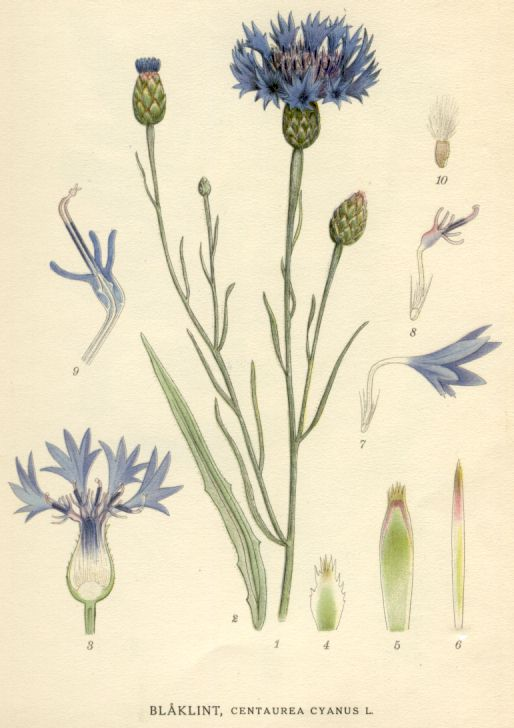
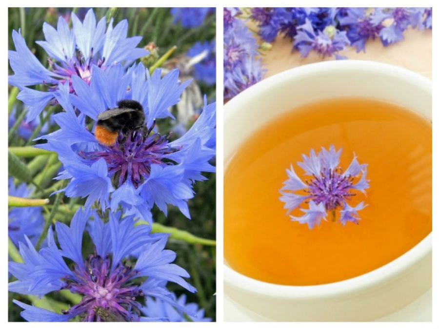
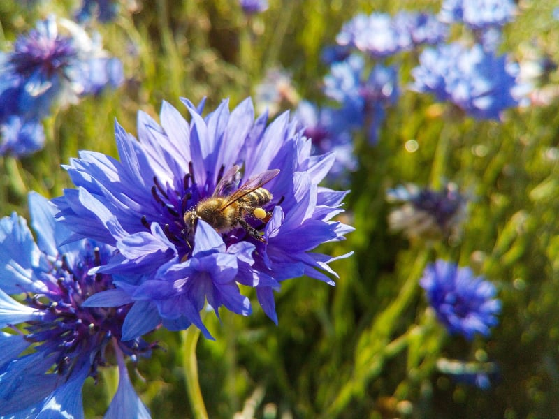
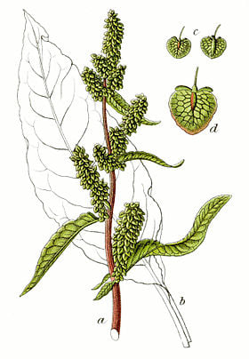
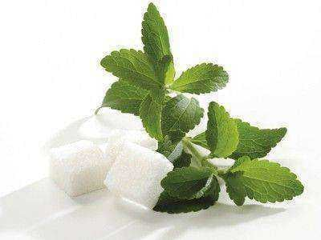
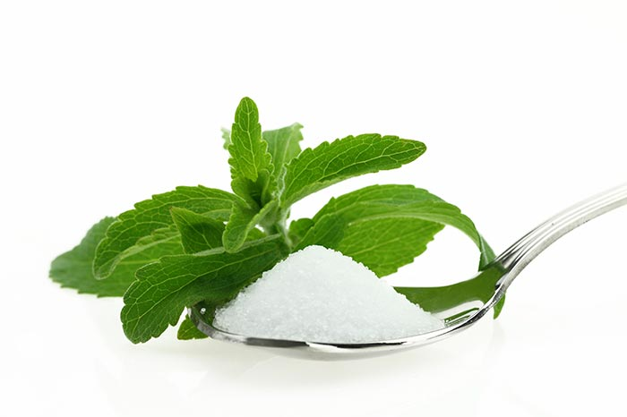
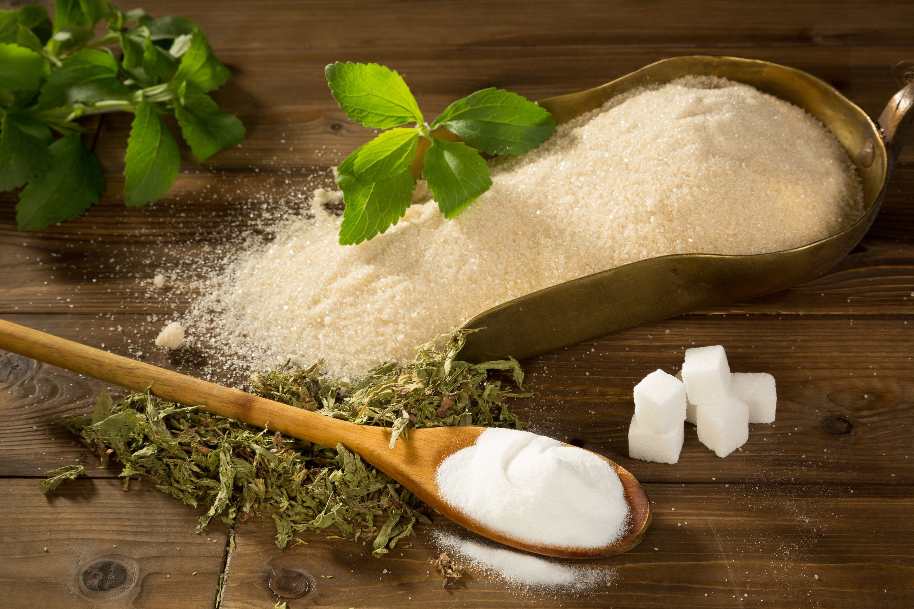
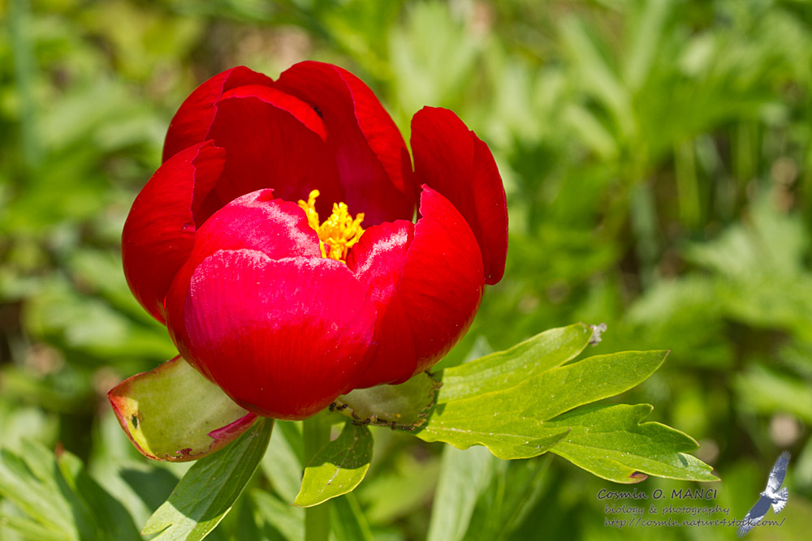
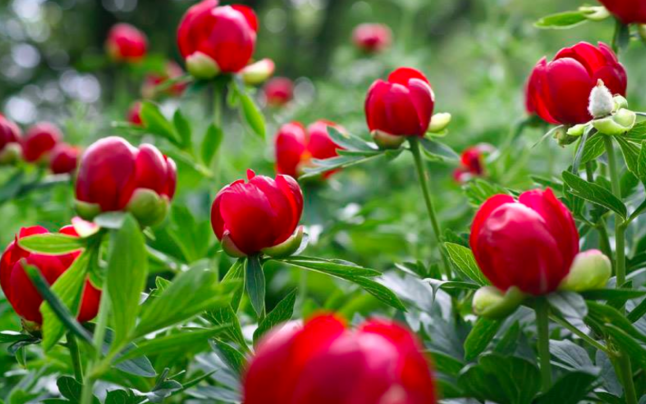

Caracteristici generale
PLANTELE
1. Albăstrea Angelescu
Albăstreaua Angelescu este o plantă ierboasă. În scopuri medicinale se recoltează florile albastre. Florile de nuanţă alb-roz se îndepărtează. În timpul înfloririi, acestea
au un conţinut bogat de antocian, mucilagii, tanin, substanţe amare, săruri de mangan, fosfor şi potasiu, pigment albastru. Florile se adună dimineaţa, când sunt complet deschise,
se pun la uscat în locuri aerisite şi uscate, se păstrează în săculeţi de pânză sau în pungi de hârtie. Florile uscate de albăstriţă, se utilizează în industria farmaceutică ca şi colorant pentru medicamente, pigmentul albastru este folosit în industria cosmetică la colorarea machiajelor, datorită efectelor benefice asupra sănătăţii şi frumuseţii, această plantă albăstriţa, este denumită şi floarea cu o mie de virtuţi sau floarea fericirii.

2. Stevie Turcească
Stevia este o plantă mai dulce decât zahărul - este clasificată ca fiind un supraaliment, care are capacitatea de a regla glicemia, de a reduce pofta de dulciuri şi senzaţia de foame. Ea nu conţine calorii, fiind benefică pentru persoanele care suferă de diabet sau hipoglicemie, sau pentru cei care luptă cu kilogramele în plus. Ea conţine în cantităţi mari vitaminele-E,A,C şi K; sărurile minerale-zinc,calciu,potasiu,fosfor,magneziu,fier; fibre, oxalaţi,proteine şi acid tartric. În scopuri medicinale se recoltează seminţele, iar toamna rădăcinile.
 Frunzele de stevie sunt cunoscute şi foarte apreciate în bucătăria tradiţională-se consumă crude în salate, dar şi gătite în ciorbe, mâncăruri scăzute cu carne. Sarmalele se împăturesc în frunze de stevie, care dau preparatului un gust deosebit, însă calităţile ei medicinale sunt mai puţin cunoscute. Consumul de stevie stimulează energia mentală şi fizică, fiind totodată o barieră împotriva bacteriilor care provoacă cariile dentare.

3. Bujorul de pădure
Bujorul de pădure este o plantă perenă, de origine balcanică, care creşte spontan în zone acoperite cu vegetaţie lemnoasă din silvostepă şi pădure. Este o prezenţă deosebită între florile din Munţii Măcinului, unde înfloreşte, în general, între prima şi a doua decadă a lunii mai. Cauza principală a dispariţiei lor, potrivit pădurarului din pădurea din Hăneşti, a fost avaria din anul 1986 de la centrala atomică din Cernobîl: „De atunci s-a observat o scădere îngrijorătoare a numărului bujorilor sălbatici. Se vede că radiaţia a acţionat asupra lor”, afirmă dânsul.
